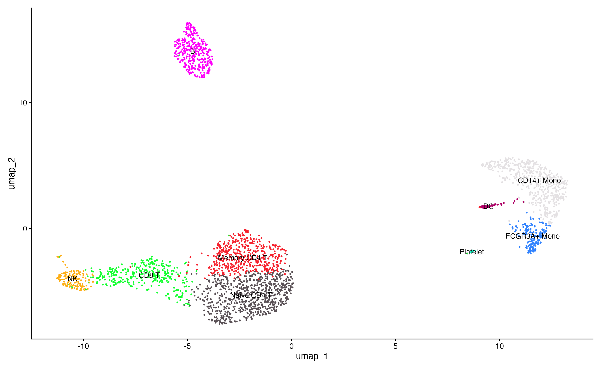
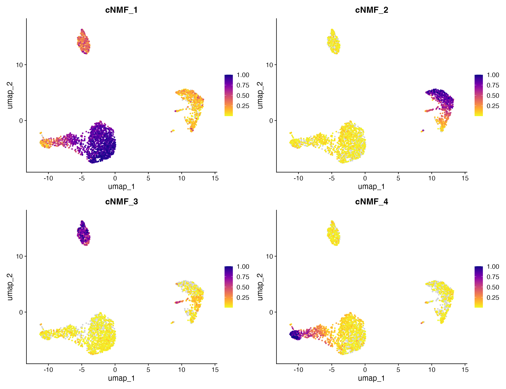
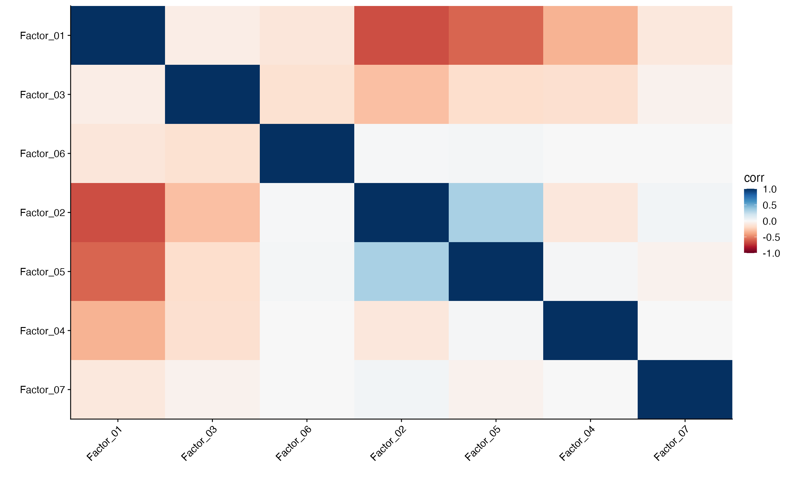
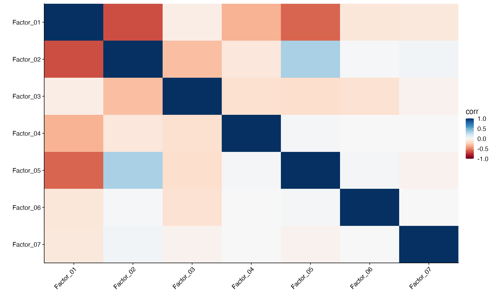

vignettes/articles/cNMF_Functionality.Rmd
cNMF_Functionality.RmdscCustomize contains functions to aid in the interaction with results of consensus non-negative matrix factorization (cNMF) and Seurat objects. For more information on cNMF see cNMF GitHub Repo and cNMF Publication.
For this example we will use example outputs from using the pbmc3k object run using the same paramters as shown in cNMF R vignette.
library(ggplot2)
library(dplyr)
library(tibble)
library(magrittr)
library(Seurat)
library(scCustomize)
library(patchwork)
# Load pbmc dataset
pbmc <- pbmc3k.SeuratData::pbmc3k
# Run basic analysis (copied from pbmc3k vignette)
pbmc <- NormalizeData(pbmc) %>%
FindVariableFeatures() %>%
ScaleData() %>%
RunPCA() %>%
FindNeighbors(dims = 1:10) %>%
FindClusters(resolution = 0.5) %>%
RunUMAP(dims = 1:10)## Modularity Optimizer version 1.3.0 by Ludo Waltman and Nees Jan van Eck
##
## Number of nodes: 2700
## Number of edges: 97892
##
## Running Louvain algorithm...
## Maximum modularity in 10 random starts: 0.8719
## Number of communities: 9
## Elapsed time: 0 seconds
new.cluster.ids <- c("Naive CD4 T", "CD14+ Mono", "Memory CD4 T", "B", "CD8 T", "FCGR3A+ Mono",
"NK", "DC", "Platelet")
names(new.cluster.ids) <- levels(pbmc)
pbmc <- RenameIdents(pbmc, new.cluster.ids)
DimPlot_scCustom(pbmc, label = TRUE, pt.size = 0.5) + NoLegend()
scCustomize contains the function Read_Add_cNMF that can
take the results from cNMF and add custom dimensionality reduction to
Seurat object. The function only requires user to supply the paths to
the cNMF usage and spectra files that contain the cell and feature
loadings respectively. By default this will add new reduction “cnmf” to
the Seurat object.
pbmc <- Read_Add_cNMF(seurat_object = pbmc, usage_file = "assets/cNMF_Example_Data/example_cNMF.usages.k_7.dt_0_1.consensus.txt",
spectra_file = "assets/cNMF_Example_Data/example_cNMF.gene_spectra_score.k_7.dt_0_1.txt")There are few optional parameters in Read_Add_cNMF for
increased user control if desired.
* reduction_name & reduction_key These can
used to either change defaults (“cnmf” and “cNMF_” respectively) or if
user wants to add results from multiple cNMF runs different names can be
supplied for each one.
- For instance save second reduction with different k value.
* overwrite used to overwrite old cNMF reduction with new
data using the same reduction_name.
# Add result from additional cNMF run as separate reduction (for instance with different k
# value)
pbmc <- Read_Add_cNMF(seurat_object = pbmc, usage_file = "assets/cNMF_Example_Data/example_cNMF.usages.k_15.dt_0_1.consensus.txt",
spectra_file = "assets/cNMF_Example_Data/example_cNMF.gene_spectra_score.k_15.dt_0_1.txt", reduction_name = "cnmf.alt",
reduction_key = "CNMFALT_")
# Overwrite current cNMF reduction with new results but keep same `reduction_name`
pbmc <- Read_Add_cNMF(seurat_object = pbmc, usage_file = "assets/cNMF_Example_Data/example_cNMF.usages.k_15.dt_0_1.consensus.txt",
spectra_file = "assets/cNMF_Example_Data/example_cNMF.gene_spectra_score.k_15.dt_0_1.txt", overwrite = TRUE)cNMF results can be plotted in several ways using scCustomize.
The cNMF factor cell loadings can be plotted like any other reduction
using FeaturePlot_scCustom. Just supply the name of the
factor like any other reduction.
FeaturePlot_scCustom(seurat_object = pbmc, features = c("cNMF_1", "cNMF_2", "cNMF_3", "cNMF_4"))
scCustomize also has plotting function Factor_Cor_Plot
to examine relationships between factors by plotting the correlation of
feature loadings for cNMF factors.
Factor_Cor_Plot(object = pbmc, reduction = "cnmf")
By default (above) Factor_Cor_Plot runs hierarchical
clustering on the correlations and orders the factors on the plot. But
users can also adjust this to plot the factors in numerical order.
Factor_Cor_Plot(object = pbmc, reduction = "cnmf", cluster = FALSE)
Factor_Cor_Plot also contains a number of other optional
parameters to change the output plot.
# Only plot positive correlations
Factor_Cor_Plot(object = pbmc, reduction = "cnmf", positive_only = TRUE)
# Only plot only the upper diagonal
Factor_Cor_Plot(object = pbmc, reduction = "cnmf", plot_type = "upper", cluster = FALSE)
# Only plot only the lower diagonal
Factor_Cor_Plot(object = pbmc, reduction = "cnmf", plot_type = "lower", cluster = FALSE)
# Add clustering rectangles (uses `cutree`)
Factor_Cor_Plot(object = pbmc, reduction = "cnmf", cluster_rect = T, cluster_rect_num = 6, cluster_rect_col = "magenta")
A. Plotting only the positive correlations
(negative correlations set to 0). B. Plot only the
upper diagonal (must set cluster = FALSE).
C. Plot only the lower diagonal (must set
cluster = FALSE). D. Add rectangles around
clustered results (uses cutree).
scCustomize also contains functions to interact with and retrive data
from the cNMF reduction.
NOTE: These functions are S3 generics and can be used to retrieve
the same information about LIGER iNMF reductions with given LIGER
object, or from iNMF reduction in Seurat object.
The function Top_Genes_Factor can be used to retrieve
top loading genes from cNMF factors. Let’s check what genes load most
heavily on factor 2 which we can see above loads heavily on CD14+
Monocyte cluster.
top_gene_factor1 <- Top_Genes_Factor(object = pbmc, factor = 2, reduction = "cnmf")
top_gene_factor1## [1] "LGALS1" "GSTP1" "LGALS2" "TYROBP" "FCN1" "CST3" "CD14" "S100A8"
## [9] "S100A9" "LYZ"By default Top_Genes_Factor will return the top 10
loading genes but can return any number of genes by supplying value to
the num_genes parameter.
top_gene_factor1 <- Top_Genes_Factor(object = pbmc, factor = 2, num_genes = 20, reduction = "cnmf")
top_gene_factor1## [1] "CSF3R" "GABARAP" "TYMP" "BLVRB" "FTL" "GRN" "TSPO"
## [8] "CEBPD" "S100A6" "AP1S2" "LGALS1" "GSTP1" "LGALS2" "TYROBP"
## [15] "FCN1" "CST3" "CD14" "S100A8" "S100A9" "LYZ"If you want to retrieve the top loading genes for all factors within
given reduction you can set factor = "all" and the function
will return data.frame with one column per factor.
top_10_factor_df <- Top_Genes_Factor(object = pbmc, factor = "all", reduction = "cnmf")
head(top_10_factor_df, 10)| Factor_1 | Factor_2 | Factor_3 | Factor_4 | Factor_5 | Factor_6 | Factor_7 | |
|---|---|---|---|---|---|---|---|
| 1 | HLA-DRB1 | LGALS1 | HLA-DPA1 | CLIC3 | AIF1 | BLM | PRUNE |
| 2 | CYBA | GSTP1 | MS4A1 | CTSW | RHOC | BIRC5 | ESAM |
| 3 | RPS27A | LGALS2 | HLA-DQA2 | CST7 | COTL1 | KIFC1 | MMD |
| 4 | RPS6 | TYROBP | CD79B | SPON2 | IFITM2 | TK1 | PTCRA |
| 5 | RPL31 | FCN1 | HLA-DRB1 | FGFBP2 | IFITM3 | CDC20 | ACRBP |
| 6 | RPS15A | CST3 | HLA-DPB1 | GNLY | MS4A7 | KIAA0101 | LGALSL |
| 7 | EEF1A1 | CD14 | HLA-DQA1 | GZMA | RP11-290F20.3 | TYMS | AC147651.3 |
| 8 | RPS25 | S100A8 | HLA-DQB1 | GZMB | LST1 | MCM10 | HIST1H2AC |
| 9 | RPS27 | S100A9 | HLA-DRA | PRF1 | FCER1G | CDC6 | TSC22D1 |
| 10 | RPS12 | LYZ | CD74 | NKG7 | FCGR3A | RRM2 | C2orf88 |